Clean Markup in Drupal 7
DS, Semantic Views, Media, and Custom Themes
https://github.com/damontgomery/clean-markup
Created by Dan Montgomery (PandaEskimo)
Inspired in part by Death of a Themer by James Panton
(http://www.codeenigma.com/en/blog/drupal-theming-death-of-a-themer)
The Drupal Team
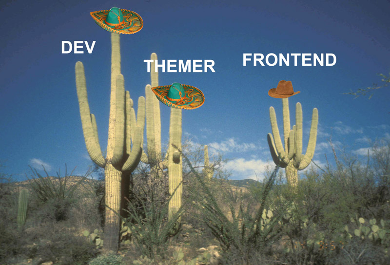The Problem
- Developing front end for Drupal 7 is no fun.
- You have to do it the "Drupal way".
- Responsive designs don't work well.
- Overrides and conflicts with old JS libraries.
- For larger teams, flexibility leads to a mess.
The Solution
- Gut Drupal's front end to its core.
- Add back in what you want.
- Stop hearing, "Drupal sucks"?
Sample Content
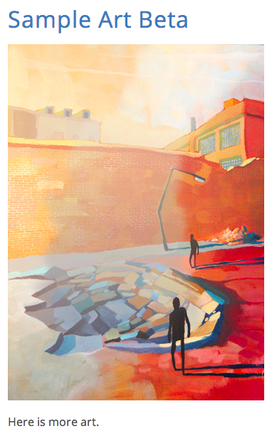DIVS DIVS DIVS
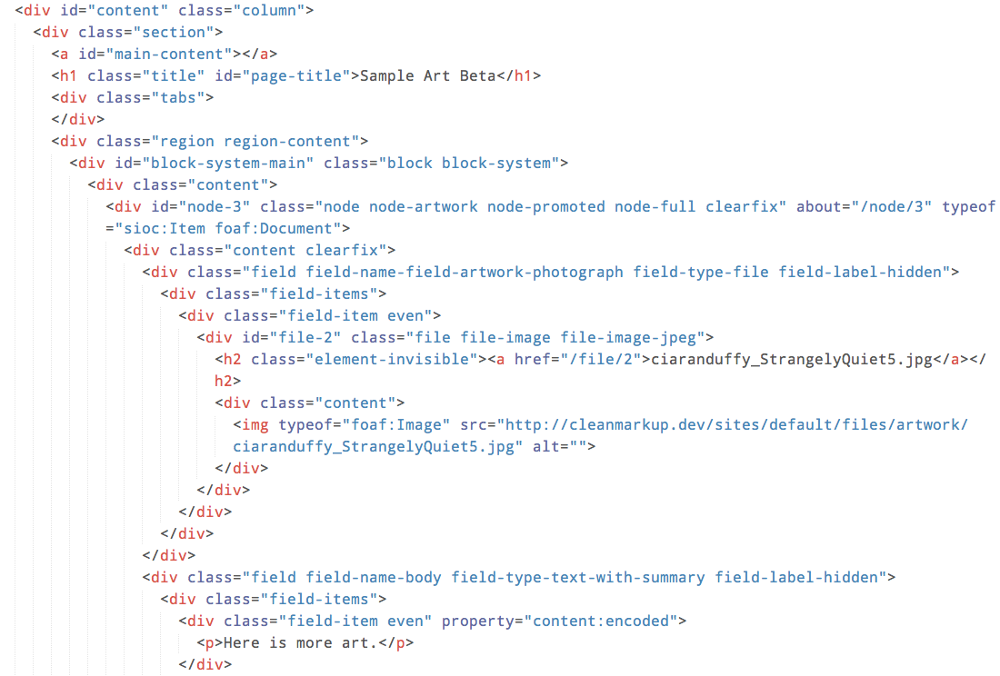What a frontend dev sees
What frontend devs do
:(
Nice and Clean!
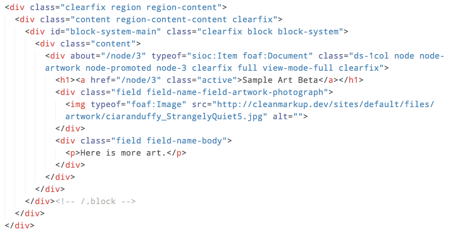Remember this?
Let's go back to the hats
Too Little?
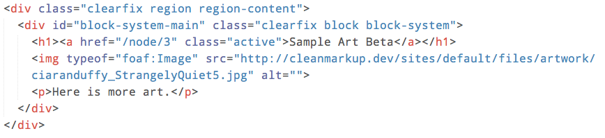Key Modules
- Display Suite (DS)
- Display Suite Extras
- Semantic Views
- jQuery Update
- Your own theme!
Your own theme?
Don't worry! Theming doesn't have to be a pain.
The theme will focus on wrangling Drupal's containers
Let's start with the fields inside those containers
Enable DS Extras Field Templates
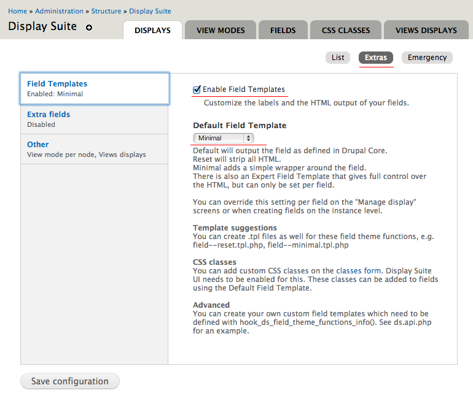Manage Display
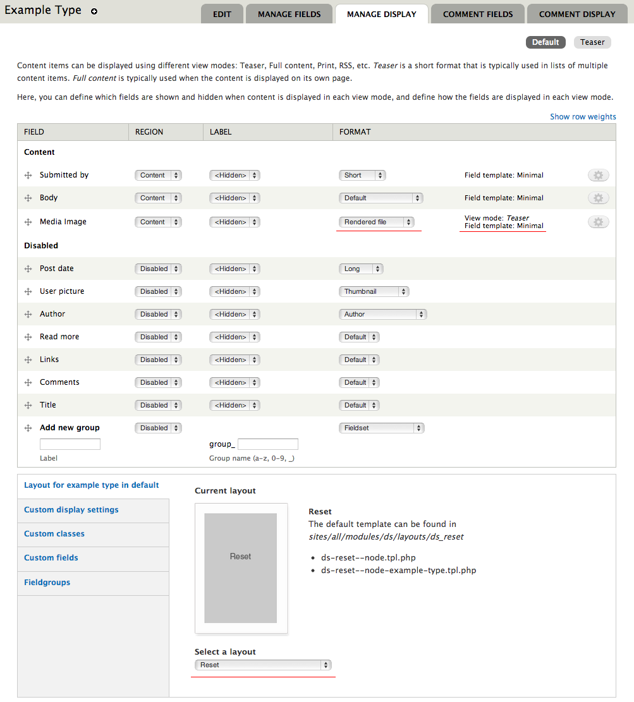Manage Media Display
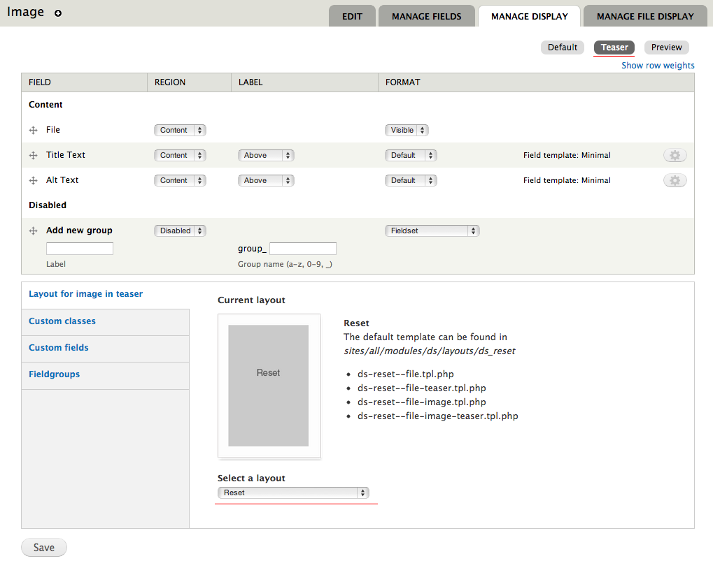Manage Media File Display
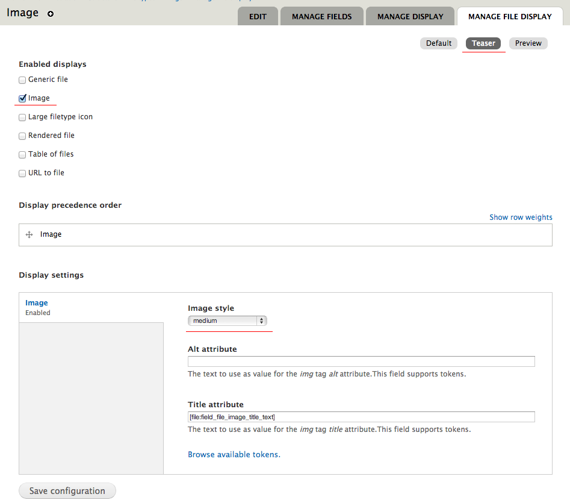Back to the containers (theme)
Drupal Markup Structure
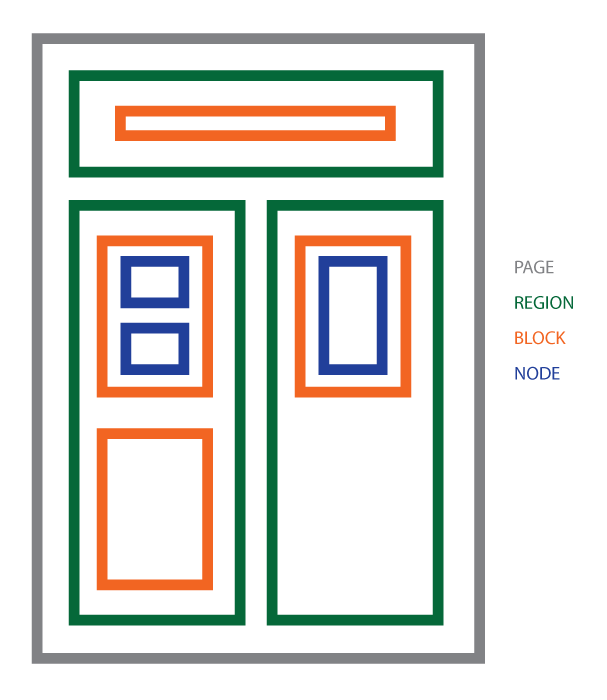Key Theme Components
- mytheme.info
- template.php
- CSS
- JS
- templates
- html.tpl.php
- page.tpl.php
- region.tpl.php
- block.tpl.php
- node.tpl.php
- semanticviews-view-fields.tpl.php
- views-view-tpl.php
Example: Block.tpl.php
Default
<div id="<?php print $block_html_id; ?>" class="<?php print $classes; ?>"
<?php print $attributes; ?>>
<?php print render($title_prefix); ?>
<?php if ($block->subject): ?>
<h2<?php print $title_attributes; ?>><?php print $block->subject ?></h2>
<?php endif;?>
<?php print render($title_suffix); ?>
<div class="content"<?php print $content_attributes; ?>>
<?php print $content ?>
</div>
</div>Example: New Block.tpl.php
<div id="<?php print $block_html_id; ?>"class="clearfix <?php print $classes; ?>"<?php print $attributes; ?>>
<div class="content"<?php print $content_attributes; ?>>
<?php print render($title_prefix); ?>
<?php if (isset($block->subject) and ($block->subject !== '')): ?>
<div class="block-title">
<h3<?php print $title_attributes; ?>><?php print $block->subject; ?></h3>
</div>
<?php endif; ?>
<?php print render($title_suffix); ?>
<?php print $content; ?>
</div>
</div>
Example default HTML.tpl.php
<!DOCTYPE html PUBLIC "-//W3C//DTD XHTML+RDFa 1.0//EN"
"http://www.w3.org/MarkUp/DTD/xhtml-rdfa-1.dtd">
<html xmlns="http://www.w3.org/1999/xhtml" xml:lang="<?php print $language->language; ?>" version="XHTML+RDFa 1.0" dir="<?php print $language->dir; ?>"<?php print $rdf_namespaces; ?>>
<head profile="<?php print $grddl_profile; ?>">
<?php print $head; ?>
<title><?php print $head_title; ?></title>
<?php print $styles; ?>
<?php print $scripts; ?>
</head>
<body class="<?php print $classes; ?>" <?php print $attributes;?>>
<div id="skip-link">
<a href="#main-content" class="element-invisible element-focusable"><?php print t('Skip to main content'); ?></a>
</div>
<?php print $page_top; ?>
<?php print $page; ?>
<?php print $page_bottom; ?>
</body>
</html>
Example custom HTML.tpl.php
<!DOCTYPE html>
<html lang="<?php print $language->language; ?>" dir="<?php print $language->dir; ?>"<?php print $rdf_namespaces; ?>>
<head>
<?php print $head; ?>
<title><?php print $head_title; ?></title>
<?php print $styles; ?>
<?php print $scripts; ?>
</head>
<body class="<?php print $classes; ?>" <?php print $attributes;?>></div>
<?php print $page_top; ?>
<?php print $page; ?>
<?php print $page_bottom; ?>
</body>
</html>
Example default PAGE.tpl.php
<div id="page-wrapper"><div id="page">
<div id="header"><div class="section clearfix">
<?php if ($logo): ?>
<a href="<?php print $front_page; ?>" title="<?php print t('Home'); ?>" rel="home" id="logo">
<img src="<?php print $logo; ?>" alt="<?php print t('Home'); ?>" />
</a>
<?php endif; ?>
<?php if ($site_name || $site_slogan): ?>
<div id="name-and-slogan">
<?php if ($site_name): ?>
<?php if ($title): ?>
<div id="site-name"><strong>
<a href="<?php print $front_page; ?>" title="<?php print t('Home'); ?>" rel="home"><span><?php print $site_name; ?></span></a>
</strong></div>
<?php else: /* Use h1 when the content title is empty */ ?>
<h1 id="site-name">
<a href="<?php print $front_page; ?>" title="<?php print t('Home'); ?>" rel="home"><span><?php print $site_name; ?></span></a>
</h1>
<?php endif; ?>
<?php endif; ?>
<?php if ($site_slogan): ?>
<div id="site-slogan"><?php print $site_slogan; ?></div>
<?php endif; ?>
</div> <!-- /#name-and-slogan -->
<?php endif; ?>
<?php print render($page['header']); ?>
</div></div> <!-- /.section, /#header -->
<?php if ($main_menu || $secondary_menu): ?>
<div id="navigation"><div class="section">
<?php print theme('links__system_main_menu', array('links' => $main_menu, 'attributes' => array('id' => 'main-menu', 'class' => array('links', 'inline', 'clearfix')), 'heading' => t('Main menu'))); ?>
<?php print theme('links__system_secondary_menu', array('links' => $secondary_menu, 'attributes' => array('id' => 'secondary-menu', 'class' => array('links', 'inline', 'clearfix')), 'heading' => t('Secondary menu'))); ?>
</div></div> <!-- /.section, /#navigation -->
<?php endif; ?>
<?php if ($breadcrumb): ?>
<div id="breadcrumb"><?php print $breadcrumb; ?></div>
<?php endif; ?>
<?php print $messages; ?>
<div id="main-wrapper"><div id="main" class="clearfix">
<div id="content" class="column"><div class="section">
<?php if ($page['highlighted']): ?><div id="highlighted"><?php print render($page['highlighted']); ?></div><?php endif; ?>
<a id="main-content"></a>
<?php print render($title_prefix); ?>
<?php if ($title): ?><h1 class="title" id="page-title"><?php print $title; ?></h1><?php endif; ?>
<?php print render($title_suffix); ?>
<?php if ($tabs): ?><div class="tabs"><?php print render($tabs); ?></div><?php endif; ?>
<?php print render($page['help']); ?>
<?php if ($action_links): ?><ul class="action-links"><?php print render($action_links); ?></ul><?php endif; ?>
<?php print render($page['content']); ?>
<?php print $feed_icons; ?>
</div></div> <!-- /.section, /#content -->
<?php if ($page['sidebar_first']): ?>
<div id="sidebar-first" class="column sidebar"><div class="section">
<?php print render($page['sidebar_first']); ?>
</div></div> <!-- /.section, /#sidebar-first -->
<?php endif; ?>
<?php if ($page['sidebar_second']): ?>
<div id="sidebar-second" class="column sidebar"><div class="section">
<?php print render($page['sidebar_second']); ?>
</div></div> <!-- /.section, /#sidebar-second -->
<?php endif; ?>
</div></div> <!-- /#main, /#main-wrapper -->
<div id="footer"><div class="section">
<?php print render($page['footer']); ?>
</div></div> <!-- /.section, /#footer -->
</div></div> <!-- /#page, /#page-wrapper -->
Example custom page.tpl.php
<div id="page">
<div id="page-content" class="clearfix">
<?php print render($page['header']); ?>
<?php print render($page['navigation']); ?>
<?php print render($page['help']); ?>
<?php if (!empty($messages)): ?>
<?php print $messages; ?>
<?php endif; ?>
<?php if ($tabs = render($tabs)): ?>
<div class="tabs"><?php print $tabs; ?></div>
<?php endif; ?>
<?php if ($action_links): ?>
<ul class="action-links"><?php print render($action_links); ?></ul>
<?php endif; ?>
<?php print render($page['content']); ?>
<?php print render($page['sidebar_first']); ?>
<?php print render($page['sidebar_second']); ?>
<?php print render($page['footer']); ?>
</div>
</div>Example advanced custom page.tpl.php
<div class="main-pane-outer">
<div class="main-pane-inner">
<?php print render($page['ticker']); ?>
<?php print render($page['header']); ?>
<?php print render($page['navigation_pane']); ?>
<?php print render($page['navigation']); ?>
<div id="page-wrapper">
<div id="page-wrapper-content">
<div id="page">
<div id="page-content" class="clearfix">
<?php print render($page['help']); ?>
<?php print render($page['content_over']); ?>
<?php if (!empty($messages)): ?>
<?php print $messages; ?>
<?php endif; ?>
<?php if ($tabs = render($tabs)): ?>
<div class="tabs"><?php print $tabs; ?></div>
<?php endif; ?>
<?php if ($action_links): ?>
<ul class="action-links"><?php print render($action_links); ?></ul>
<?php endif; ?>
<?php print render($page['content']); ?>
<?php print render($page['sidebar_first']); ?>
<?php print render($page['sidebar_second']); ?>
<?php print render($page['content_under']); ?>
</div>
</div>
</div>
</div>
<div id="footer-wrapper">
<div id="footer-wrapper-content">
<?php print render($page['footer']); ?>
</div>
</div>
</div>
</div>What about Views?
Clean Views!
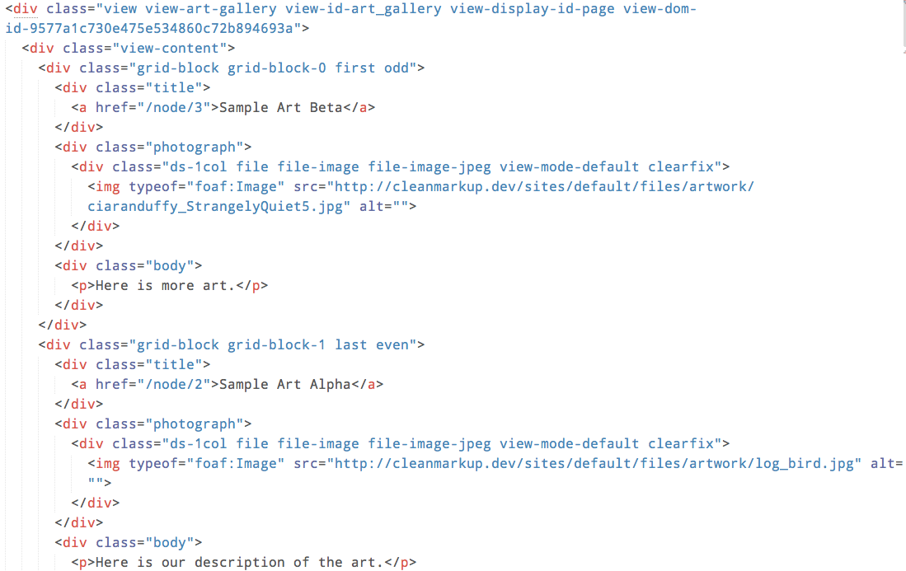View Formats
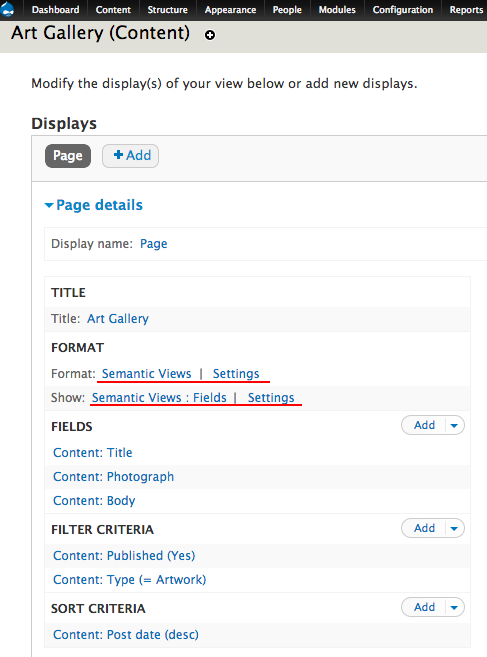Semantic View Field Settings
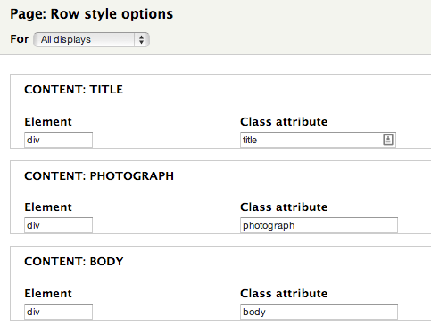Removing What Drupal Gives
(forces on?) You
Removing Image Height and Width
/*Remove the automatic addition of width and height attributes for images.
This speeds front-end performance, but breaks responsive designs.*/
function MYTHEME_preprocess_image(&$variables) {
unset(
$variables['width'],
$variables['height'],
$variables['attributes']['width'],
$variables['attributes']['height']
);
}Gutting the CSS /JS
// Remove some module CSS files
function MYTHEME_css_alter(&$css) {
unset($css[drupal_get_path('module', 'system') . '/system.menus.css']);
unset($css[drupal_get_path('module', 'system') . '/system.theme.css']);
unset($css[drupal_get_path('module', 'user') . '/user.css']);
}